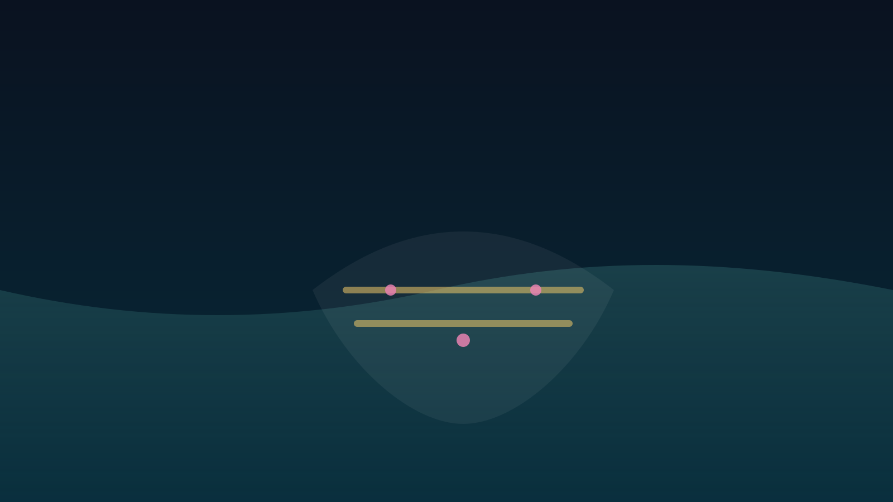

Synthetic BiologyDNAの“よじれ”が回路になる
超らせんが隣接遺伝子の発現を結び付ける仕組みを解説します。
読む
Active Matter棒状スイマーの“群れ”に最適形がある
アクティブ乱流が生まれる形・密度条件を整理します。
読む

Robotics電子回路なしで「地形に適応」するソフトロボ
受動適応という設計思想で、水陸移動を両立する試みを紹介します。
読む
Computational Biology系統解析が遅すぎ問題：ベイズ推定を「並列化」する新手法
population phylogenomicsを現実的な計算時間へ近づけます。
読む

AI / SocietyやさしいAIは、正確さを失うのか
温かい返答を学習させた言語モデルで、精度と迎合性がどう変わるかを見ます。
読む